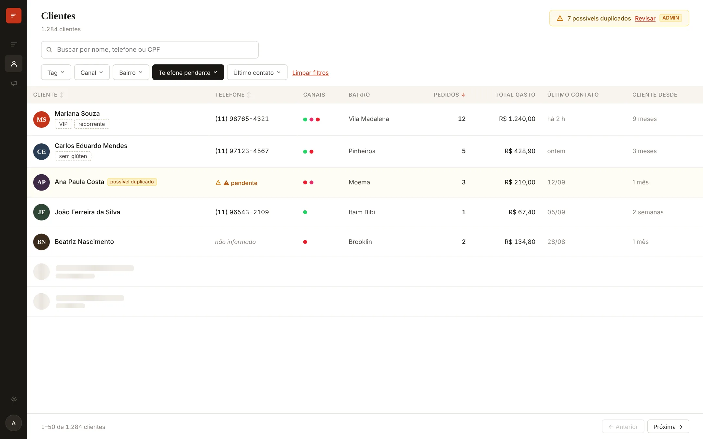

Todo o atendimento do seu restaurante, em uma caixa de entrada só.
O Dish Desk junta as mensagens do WhatsApp, do Instagram e do iFood em um só lugar, com o histórico de pedidos de cada cliente ao lado da conversa.

Menos abas abertas, mais clientes respondidos.
Feito para a rotina de quem atende no balcão, no delivery e no pico do jantar.
Uma caixa de entrada
Conversas de todos os canais numa fila só, com status de aberto, pendente e resolvido.
Pedido ao lado da conversa
Itens, valores e status do pedido do iFood aparecem dentro do atendimento, sem trocar de tela.
Equipe organizada
Atribua conversas, deixe notas internas e veja quem está atendendo cada cliente.
O pedido do cliente aparece sozinho.
Ao abrir a conversa, o Dish Desk já mostra qual pedido o cliente tem ativo no seu restaurante e se ele está no prazo ou atrasado.
- Pedido localizado pelo cadastro do cliente, sem trocar de tela
- Itens, observações e valor ao lado da conversa
- Previsão de saída e entrega prometida, com alerta de atraso
- Avise o cliente da nova previsão direto da conversa
- 1× Lasanha Bolonhesa GObs.: sem cebola
- 1× Refrigerante Lata 350ml
- Decorrido
- 52 min
- Saída prevista
- 19:45 · atrasado
- Entrega prometida (iFood)
- 19:30
Conheça quem pede de você.
Cada cliente vira um cadastro único, mesmo quando fala por canais diferentes.
- Histórico de pedidos e total gasto por cliente
- Tags como VIP, recorrente ou sem glúten
- Aviso de cadastros duplicados para juntar
- Dados sensíveis protegidos, de acordo com a LGPD

Ganhe tempo sem perder o atendimento humanizado.
Automatize parte do seu atendimento e deixe a equipe livre para as conversas que precisam de gente.
- Menu inicial que direciona cada conversa
- Avisos automáticos quando o pedido sai e quando é entregue
- Mensagem de fora do horário e pesquisa de satisfação
- Mensagens no tom do seu restaurante, do formal ao descontraído
- Um atendente assume quando o assunto pede
Conecte os canais que você já usa.
A conexão é feita nas configurações do sistema, em poucos minutos.
Quer ver o Dish Desk no seu restaurante?
Fale com a gente pelo WhatsApp ou por e-mail. Se já tem uma conta, é só entrar.